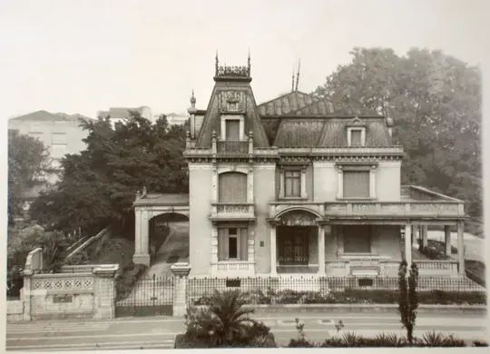

O Casarão de 1935 (30 Cômodos)
Construído entre 1927 e 1935 pelo Escritório Ramos de Azevedo (Severo & Villares) em estilo eclético com influência da Renascença francesa, possui 4 pavimentos, duas varandas, pisos marchetados e ladrilhos hidráulicos.
Dedicada à poesia, à literatura e à memória cultural, a Casa das Rosas preserva o acervo de Haroldo de Campos e abre seus jardins gratuitamente no coração de São Paulo.
Pensado para quem caminha pela Paulista e consulta pelo celular, para estudantes de todo o país e para quem descobre a poesia pela primeira vez.
Construído entre 1927 e 1935 pelo Escritório Ramos de Azevedo (Severo & Villares) em estilo eclético com influência da Renascença francesa, possui 4 pavimentos, duas varandas, pisos marchetados e ladrilhos hidráulicos.
Aberto diariamente das 7h às 22h com acesso livre, o jardim convive com o Caffè Ristoro na edícula. Pets são bem-vindos nas áreas externas (com coleira), tornando o espaço um refúgio na Paulista.
O museu conta com rampa de acesso, elevador para todos os pavimentos, piso podotátil, corrimãos duplos em Braille, banheiro acessível e site com controles de fonte e alto contraste.
Uma amostra visual do que está em cartaz e do acervo preservado pela Casa das Rosas.
Selecione um marco cronológico abaixo para percorrer a história da arquitetura paulista, da poesia concreta e da formação do acervo.
Projetado pelo Escritório Técnico Ramos de Azevedo (acompanhamento de Felisberto Ranzini, já como Severo & Villares) para Ernesto Dias de Castro e Lúcia Lacaze Ramos de Azevedo, o casarão foi habitado pela família por 51 anos, até 1986.
“Um dos poucos remanescentes da fase residencial da Paulista, testemunha das transformações urbanas da cidade.”
Haroldo de Campos, Augusto de Campos e Décio Pignatari fundam o movimento concretista com a revista Noigandres, integrando palavra, som, tipografia e espaço visual.
“O poema concreto comunica a sua própria estrutura: o branco da página também fala.”
Após processo de tombamento e restauração, o imóvel passa a funcionar como espaço cultural público, acolhendo saraus noturnos, oficinas de escrita e lançamentos literários.
“O jardim de roseiras se torna ponto de encontro gratuito para leitores de todas as idades.”
O museu passa a abrigar a biblioteca particular e documentos de trabalho de Haroldo de Campos, consolidando-se como referência para pesquisadores e estudantes.
“Livros anotados à mão, correspondências internacionais e edições raras reunidos sob o mesmo teto.”
Revitalizada entre 2021 e 2023 com acessibilidade arquitetônica completa, a Casa das Rosas une exposições contemporâneas, oficinas, bolsas de pesquisa Haroldo de Campos e difusão digital.
“A memoria do casarão, de seus antigos moradores e trabalhadores e da poesia ganha vida no celular.”

Na página de exposições, você pode filtrar as peças por eixo, abrir a ficha curatorial com áudio e conferir a mostra atual.
Abrir Vitrine de ObrasMetrô e Carro: A 300m da Estação Brigadeiro (Linha 2–Verde, 5 min a pé). Convênio de estacionamento na Alameda Santos, 74 (fechado dom. e feriados).
Grupos e Mochilas: Escolas e grupos (até 40 pessoas) agendam por
agendamento@poiesis.org.br. Mochilas até 39x21 cm (não há guarda-volumes).
Cadastre seu nome e e-mail em nosso formulário simples com consentimento LGPD para receber avisos de novas mostras, saraus e aberturas de inscrição.